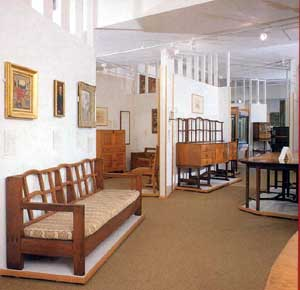

London had been the centre of development for the Arts and Crafts movement in the 1880's with new groups being established as interest spread. One of the most important was the Guild of Handicraft started by Charles Ashbee. When the lease on Guild workshops at Essex House ran out, members of the Guild agreed to move away from the noise and grime of East London in favour of the clean air and tranquillity of life in the Cotswolds at the village of Chipping Campden in 1902. Before the Guild arrived however, there was already a thriving Arts and Crafts enterprise set up by Earnest Gimson and the Barnsley brothers Earnest and Sidney who had moved from London 1893
The story of Gimson and the Barnsleys is recorded in an excellent book by Mary Greenstead who describes how the young Gimson had been much inspired by William Morris who he had met when Morris was giving a lecture in Leicester.( See Reading) Gimson was somewhat of a protege for Morris who introduced him to the London architect J. D. Sedding. Gimson took up articles with Sedding who's offices were next door to Morris and Co in Oxford Street. Through his work he met Earnest and Sidney Barnsley who had also moved to London to train as architects.
Gimson and Sidney Barnsley joined the newly established firm of Kenton and Company in 1890 designing furniture, some of which was exhibited at the Arts and Crafts Exhibition in 1891. Kenton and Co was established as part of an effort to improve standards of design and craftsmanship as opposed to production of a wide range of mediocre but commercial products. When the firm disbanded in 1892, Gimson and the Barnsleys decided to move to the country and the idea of setting up a craft community, with ' a few capable and trustworthy craftsmen' became a driving force.
Settling at Pinbury, they established a joint workshop producing furniture of very high quality construction and innovative design . The solidity and honesty of the construction of their pieces was appreciated at the time, and their 'open joinery' with wooden pins, and dovetail joints undisguised, helped to establish their style It is however interesting that the style also included decorative inlays in fruitwood and other materials, chamfering, stringing and other rather elaborate techniques which seem at odds with the notion of plain and simple furniture. These techniques however became widely adopted in the design of furniture for commercial manufacturers.
Ashbee's Guild of Handicrafts.
This was a much larger venture and 150 men women and children moved with Ashbee from London's East End to Chipping Campden to set up the new community workshop based around an old silk mill. The project thrived at first, workers produced their own vegetables, raised pigs and chickens as well working at their craft during the day. At its best, the workshop was producing fine quality work in woodcarving, cabinet making, silverwork, jewellery, enamelling and ironwork. Items which survive today are much treasured by collectors and command very high prices.
After several years the community was struggling to continue as demand for their work began to decrease. Ashbee is said to have blamed Liberty and Co for tempting customers away with antiques and 'novelties' but there were other factors such as remoteness of the workshop from its London customers that may have played a part in the downfall. It is interesting that the idyllic picture portrayed by Ashbee of the cooperative workshop was not shared by the workers, who apparently followed Ashbee's direction, accepting the work and living arrangements without sharing his high ideals. Nevertheless, Ashbee's belief that '' The standard of work and the standard of life are one ..'' still has a powerful appeal today.